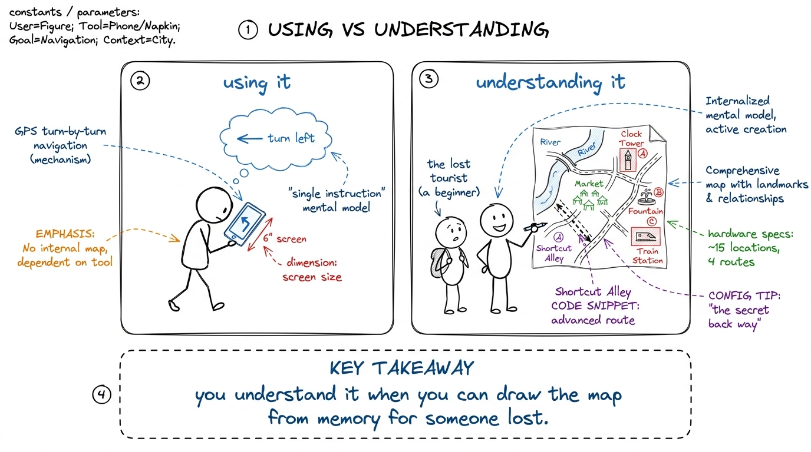
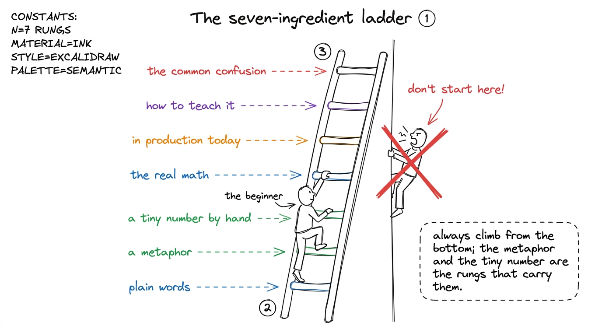
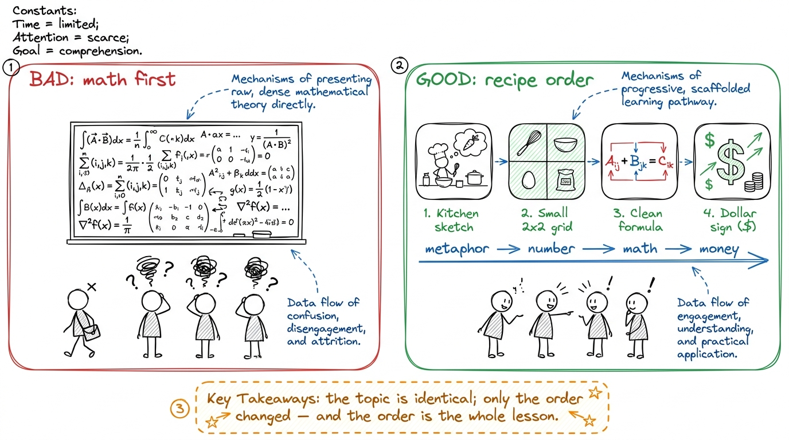
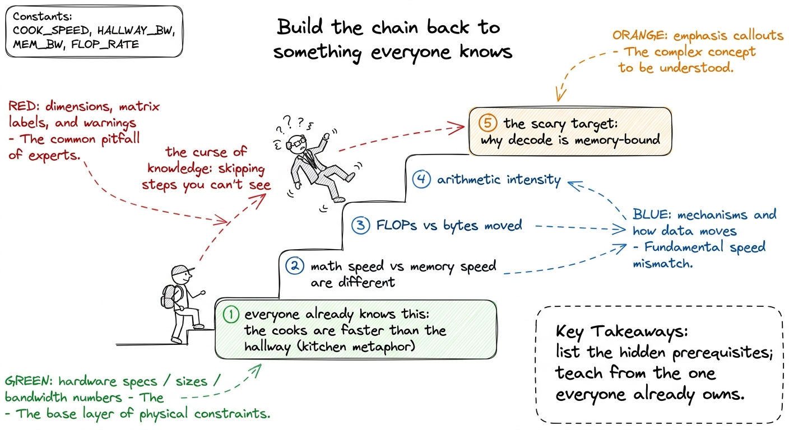
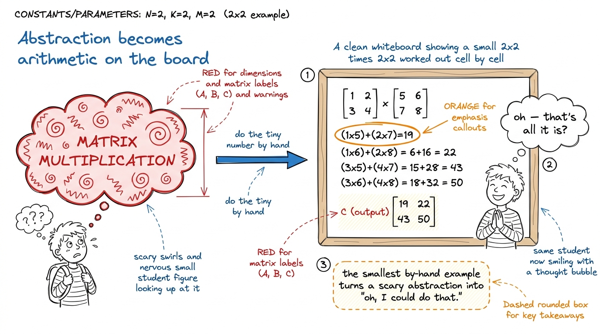
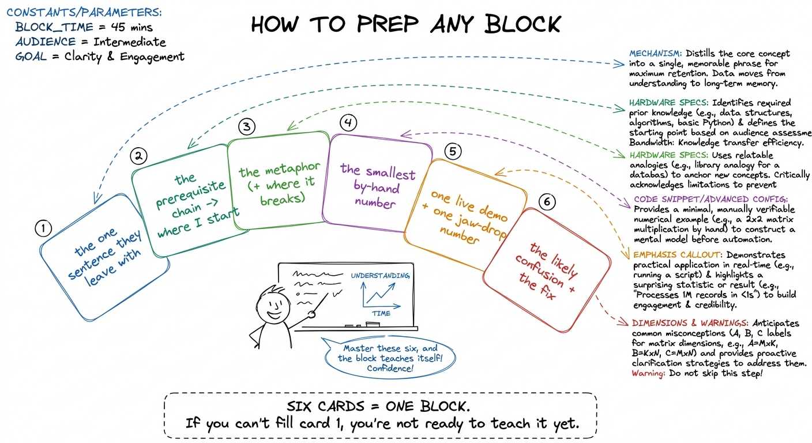

The mentor's mindset: teaching hard things simply
By the end of this chapter you can teach any hard idea in this workshop the way the best teachers do — from zero, with a metaphor, and with a tiny number on the board — because you'll have a repeatable recipe for turning something scary into something obvious. This is the one chapter that isn't about GPUs. It's about you, standing at the front of the room, making a beginner feel smart.
Everything else in this handbook is a topic. This chapter is the method. Read it first, and every other chapter will read like an example of it.
The whole idea in one sentence
You only truly understand something when you can teach it to a beginner.
Not when you can use it, nod along to a paper, or pass the quiz. You understand it when a person who knew nothing walks away also understanding it. That's the bar. It's high, and it's the kindest thing about teaching: preparing to teach is what forces the gaps in your own understanding out into the light.

figure rendering · The bar for real understanding: not following the GPS, but drawing theSay this before every block you prepare: if I can't get a beginner there, I don't have it yet — and that's information, not failure. When you sit down to teach the roofline model or online softmax and feel a soft fog where the explanation should be, that fog is a gift. It points at the exact spot you skated over. Chase it down — that chase is where your own mastery gets built.
The recipe: seven ingredients, every single time
This handbook runs on a fixed recipe — the one you will run in your head at the whiteboard. Every hard concept gets all seven, in roughly this order:
- Plain words — say it like you're talking to a smart friend who knows zero GPU.
- A metaphor — a real-world picture they can redraw: a kitchen, a marching band, a post office.
- A tiny number — a 2×2 matrix, "4 threads vs 32," something you finish by hand on the board.
- The real math — built up gently from that tiny number, never dropped from the sky.
- In production today — where this exact thing runs and earns money right now.
- Teaching notes — the board plan, the reveal order, the one demo, the jaw-drop number.
- The common confusion — the exact place students get lost and the sentence that frees them.

figure rendering · The recipe as a ladder: start at plain words, and never leap to the maThe exemplar chapters in this handbook are literally this recipe. The matmul chapter starts with a shopping receipt (metaphor), does a 2×2 by hand (number), then shows the three nested loops (math). The CPU-vs-GPU chapter starts with a fine-dining kitchen versus a cafeteria before the word "parallelism" is ever said. That ordering isn't decoration — it's the load-bearing structure. Copy it.

figure rendering · The same hard idea taught two ways: math-first loses the room; metaphoBuilding from zero: the discipline of forgetting
The hardest part of teaching an expert topic is that you are not a beginner anymore, and you've forgotten what it was like to not know. Experts skip steps unconsciously — the steps became so automatic they stopped being visible. This is called the curse of knowledge, and it is the single biggest reason smart people teach badly.
The fix is mechanical, and you can do it every time. Before you teach a thing, write down the chain of tiny prerequisites it secretly depends on, and don't stop until every link is something a bright fifteen-year-old already knows. Then teach the chain from that end.

figure rendering · Beat the curse of knowledge by walking the chain of prerequisites backMetaphors are the product, not the packaging
New mentors think the metaphor is a cute wrapper around the "real" content. It's the reverse. For a beginner, the metaphor is the understanding, and the math is the wrapper that makes it precise later. A student who leaves with "the GPU is a cafeteria line and the hard part is feeding the cooks" understands more than a student who can recite the HBM bandwidth number but has no picture to hang it on.
A good metaphor has three properties, and it's worth checking each one out loud when you invent one:
- It's concrete and everyday — kitchens, mail, highways, warehouses, marching bands. Not another abstraction.
- It maps piece-for-piece onto the real thing, so you can extend it. Cooks → arithmetic units. Hallway → memory bandwidth. Rice → data. Idle cooks → wasted GPU.
- It breaks honestly at some point, and you say where. Every metaphor lies a little; naming the lie is what keeps it trustworthy.
Turning abstraction into board arithmetic
The metaphor gets them believing. The tiny by-hand number makes them own it. There's a magic in doing an operation slowly, with your hand, on the board, that no slide can replace: students watch abstraction become arithmetic, live, and realize they could have done that themselves.
The rule: pick the smallest example that still shows the pattern. A 2×2 matmul, not a 512×512. "4 threads vs 32," not "tens of thousands." Small enough to finish in ninety seconds, big enough that the shape of the idea is visible.

figure rendering · The by-hand number is the moment a scary abstraction collapses into arThen — and only then — you generalize. Point at the 2×2 and say "now imagine this is 1000×1000." The math you write next isn't dropped from the sky; it's the same thing they just watched, with letters where the numbers were. That's "build the math up gently": the formula feels like a re-description of the example, never a new object.
Always tie it to money and machines running today
A beginner's quiet question is always "why should I care?" Answer it before they ask, by tying every idea to something alive and expensive right now. This is the rung that turns a lesson into a reason to lean forward.
Putting it together: how to prep any block
Here's the concrete routine to run before you teach anything in this workshop — a lecture block or a whole workshop hour. It's the seven ingredients turned into a checklist you actually do the night before.

figure rendering · The night-before routine as six index cards — the seven ingredients tuRun this on the sabotaged kernels of L7, the online-softmax build in L8, or the roofline model in L1, and the topic that felt un-teachable becomes six calm cards. The topics here are genuinely hard. The method for teaching them is not — it's a ladder, a chain, a picture, a number, a reason, and a fix, in that order, every time.
1 The routine also protects you from the most common mentor failure mode: over-preparing the math and under-preparing the entry. Beginners rarely get lost in the math itself; they get lost at the first step, before you've handed them a picture. Spend your prep budget on rungs 1–3, not rung 4.
2 If two mentors are co-teaching (as Raj and Shubham will), split by rung, not by topic: one owns the metaphor and the by-hand number, the other owns the math and the production link. Handing the chalk back and forth at the seam keeps energy up and models for students that even experts hand off.
You can now teach
- The core belief — you only understand something when you can teach a beginner — and how to treat your own fog as a map to the gaps in your understanding.
- The seven-ingredient ladder and why you must climb it from plain words, never leaping straight to the math.
- Building from zero by beating the curse of knowledge: walk the prerequisite chain back to something the room already knows, then climb one small step at a time.
- Metaphors as the product — concrete, piece-for-piece, and honest about where they break — because the picture is what survives the drive home.
- Turning abstraction into board arithmetic with the smallest by-hand number, narrated slowly, then generalized as a re-description rather than a new object.
- The night-before routine: six index cards that turn any hard block in this workshop into a calm, teachable plan — with one live demo and one jaw-drop number every time.